Multimediedesign
Liv Krogshedes Portefolio
Til forsiden

Jeg er en kreativ og innovativ og helt igennem en fest! Uddannet pædagog - nu multimediedesignstuderende. Jeg er passioneret og empatisk over for mine kunder, og og jeg er specialiseret i at se dines behov og ønsker, så vi sammen kan udvikle et koncept der passer til dig. Da jeg er dygtig i illustrator, og efterhånden habil i HTML/CSS, kan jeg hjælpe dig med at udvikle en visuel stil. Udover dette har jeg også erfaring med at lave prototyper på apps, hjemmesider og installationskunst. - også fra mit pædagogiske liv.
Konceptudvikling i samarbejde med Økolariet i Vejle
Jeg har i samarbejde med andre MMD studerende, udarbejdet et installationskunsts
koncept
for Økolariet i Vejle.
Min rolle var projektleder
Som projektleder var min rolle at holde strukturen, og facilitere
at alle kom til at bidrage med deres kompetencer. Som projektleder
er jeg godt til at finde lige præcis de ressourcer, den pågældende opgave
har brug for.
Jeg kan lidt af det hele
Foruden at være projektleder, bidrog jeg også med redigering af vores
konceptfilm. Jeg er lidt af en alt muligt kvinde, og kan gebærde mig
efter husbehov i photoshop/premiere pro/Adobe Xd/inDesign. Jeg
er dygtig til illustrator og længere nede kan du se mere om det.


Adobe illustrator
Jeg troede ikke jeg kunne tegne, ind til jeg opdagede illustrator.
Men det kan jeg godt, og det er blevet en hobby for mig og sidde
tegne digitalt. Jeg har selv lavet alle illustrationer, ikoner og animationer
her på siden. Her kan du se ikonerne lidt tættere på, inklusiv mit logo.
Jeg kan ligeledes hjælpe dig med at skabe din visuelle stil, til din virksomhed!
Redesign af hjemmesider
Jeg kan tegne og designe dine logoer, derudover kan jeg både sætte en prototype,
samt kode din hjemmeside
Her kan du se et redesign på en hjemmeside, for Hobro Gymnastikforening.
Her er før/efter billede, samt link til designet i adobe Xd.
Link til adobe Xd design
Foruden at være multimediedesignstuderende, er jeg også musiker, politisk aktiv og snart udstillende kunstner. Alt dette kan du læse mere om her